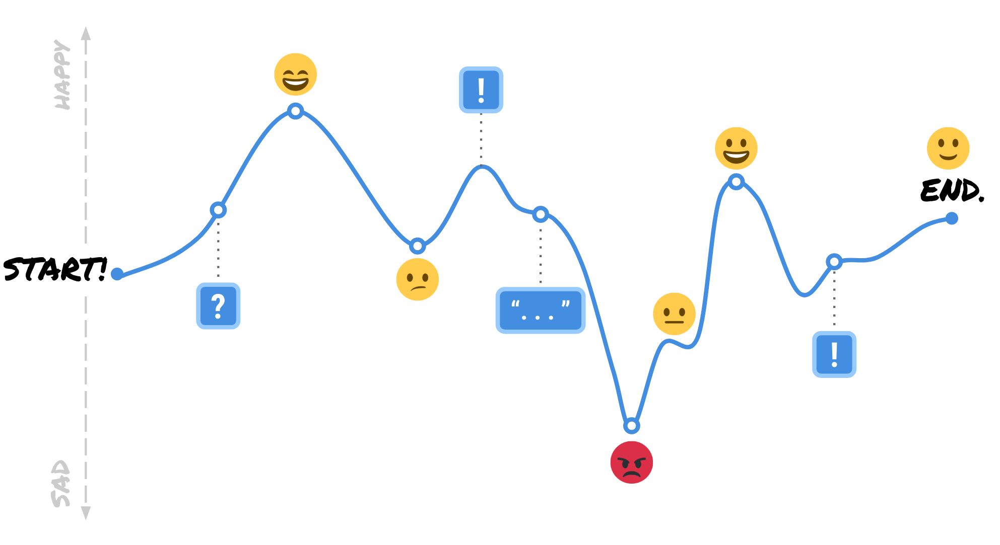
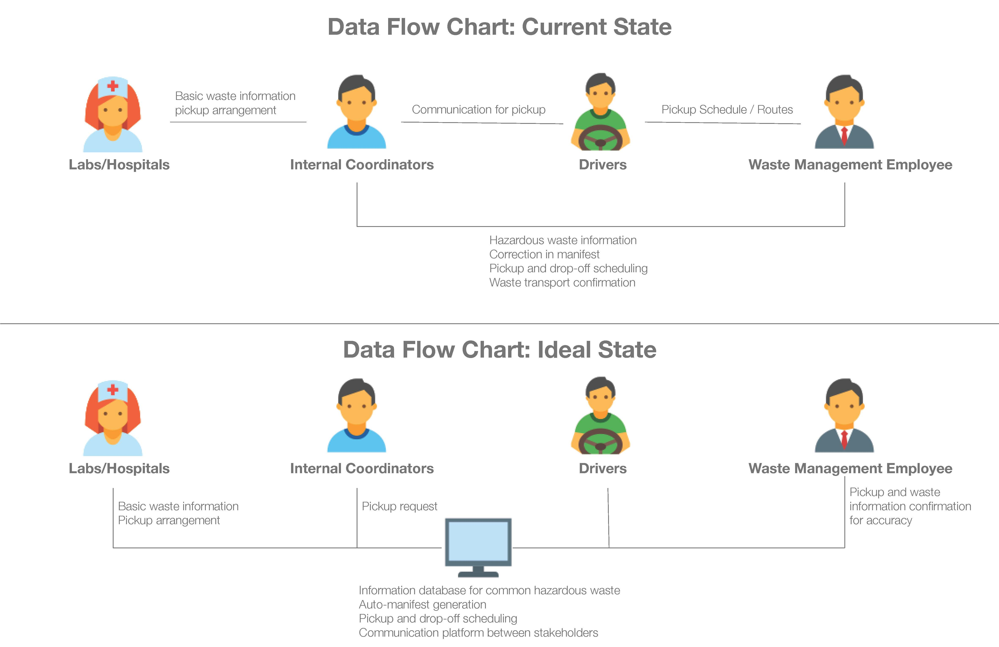

Key Concepts:
- Guerilla research
- Customer journey mapping
- Responsive design
- Storyboarding
- Sketch/Figma
- AdobeXD and InDesign
- InVision
- Min Kang
- Stephen Pak

A customer journey map example we looked at to understand the
experience of the user.
Guerilla Research
We went out into the community to ask people who worked in hazardous waste management about their process and any particular pain points they might have.
We went out into the community to ask people who worked in hazardous waste management about their process and any particular pain points they might have.
User Personas
After conducting preliminary guerilla research, we developed three main user personas for the project to represent each stakeholder group within the current hazardous waste management system.
After conducting preliminary guerilla research, we developed three main user personas for the project to represent each stakeholder group within the current hazardous waste management system.

Sharon Li
Sharon is a University lab assistant who is just starting out her new job at the research lab.

David Wagner
David is the University Coordinator and he has many responsibilities as the liasion between the university and the Waste Management Company.

Jason Daniels
Jason is a manager at the Waste Management Company and works with David to ensure everything is going smoothly on his end.

An artifact we created early on illustrating the current and intended future state
of the flow of data between our three user groups.